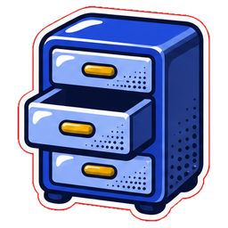

Getting started
Check a repo
Paste a repo, get four answers. Your browser reads GitHub itself, nothing passes through us.
Open Check, type the repo as owner/repo in the field that starts with github.com/, then press Pop the hood.
Run a check
Paste the repo
Type
owner/repo, or paste a full github.com link: the field keeps the owner and the name.Press Pop the hood
The lamps blink while GitHub answers. It takes a few seconds.
Read the card
Each light turns on, lights half, or stays off, with one line that says why.
Read a light
| Lamp | It means |
|---|---|
| Gold | On. The check passed. |
| Half gold | Half. The repo did its part, the on-chain part does not exist yet. Owner only. |
| Hollow | Off. The check did not pass. The line under the name says why. |
| Blinking | Checking. GitHub has not answered yet. |
Press a light, or Open the proof, to see what GitHub returned and the rule it was held to. See the raw proof opens the source itself. Got it closes the window.
Share a check
After a check, the address bar holds the repo. Send that link: the check runs again in the reader's browser, with fresh data.
https://udenhood.fun/?repo=owner/repoWhat your browser asks
| Request to GitHub | Used by |
|---|---|
GET /repos/{owner}/{repo} | all four lights |
GET /users/{owner} | History |
GET /repos/{owner}/{repo}/events | History |
GET /repos/{owner}/{repo}/deployments, then the statuses of two of them | Running |
udenhood.json from raw.githubusercontent.com | Owner |
A check costs 4 to 6 reads of the GitHub API. Without a key GitHub allows 60 an hour per network: see Limits.
Repos, wallets, dates and addresses shown in the previews are examples.